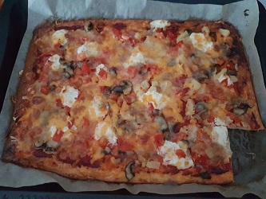

Low Carb Pizza
Zubereitungszeit: 30min
Ergibt: 2 Portionen
Schmeckt auch kalt sehr gut

- 160g Quark
- 220g geriebener Käse
- 4 Eier
- Salz, Pfeffer
- Belag nach Wahl
- Quark, Käse, Eier, Salz und Pfeffer verrühren, Masse auf dem Backblech verteilen
- 10 Minuten bei 170°C Ober/Unterhitze backen
- Währenddessen den Belag vorbereiten
- Pizzateig belegen und weitere 10 Minuten backen